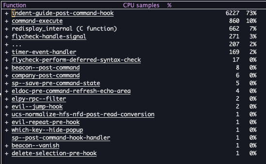
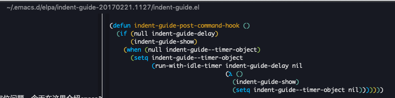

如何定位emacs卡顿的问题
很多时候听到人跟我抱怨emacs在某种情况下很卡，这时候就很无奈，因为毕竟运行环境不同，别人也很难及时的帮助你定位问题。今天在这里介绍emacs（24.3之后提供）内置的一个分析工具：profiler。
举个例子。我之前发现在编辑某个python文件的时候特别卡，于是我就需要定位一下。
此时执行：
M-x profiler-start
emacs会提示你监测内存还是cpu，还是两者都需要。卡顿一般是因为cpu占用高，所以我选择cpu。此时emacs开始记录cpu的运行情况了。
然后乱七八糟操作一阵，觉得差不多了，执行：
M-x profiler-report
来展示统计数据：

可以看到，有个罪魁祸首“indent-guide-post-command-hook”占了绝大部分的功劳。
find-function indent-guide-post-command-hook
找到这个函数：

发现是一个第三方库：indent-guide，通过melpa找到这个库：
https://github.com/zk-phi/indent-guide
发现是一个用来展示缩进竖线的库。在配置里将其禁掉，再编辑，发现不卡了。
最后，如果定位结束，不要忘了停止监听：
M-x profiler-stop
以上。